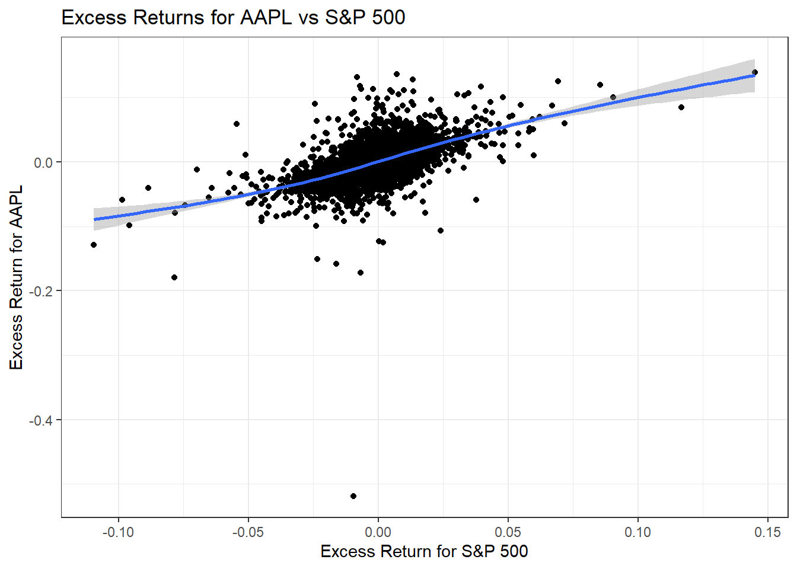

Comparing Apple (AAPL) Stock Performance to the S&P 500 (SPY) Using Capital Asset Pricing Model
Published
May 15, 2023
1 Introduction
Apple is one of the most prominent companies in the world with a market capitalization of over $2 trillion. Apple’s stock price is often used as an indicator of the health of the tech industry and the stock market as a whole. The S&P 500 is a benchmark index of 500 of the largest publicly traded companies in the United States. By comparing Apple’s performance to the S&P 500 through a Capital Asset Pricing Model (CAPM), I can gain insights into the relative performance of Apple as an investment opportunity and how it has responded to different market conditions over the years. This project is interesting because it provides a deeper understanding of the performance of Apple, which can be useful for investors, financial analysts, and researchers.
My research question is “How does Apple’s stock price compare to the S&P 500 using a Capital Asset Pricing Model (CAPM) from 2000-2023?”
I am conducting a research project to analyze the performance of Apple’s stock compared to the S&P 500 using a Capital Asset Pricing Model (CAPM) from 2000-2023. The purpose of this project is to gain insights into the relative performance of Apple as an investment opportunity and how it has responded to different market conditions over the years. This project is important for me as an investor, as it provides a deeper understanding of the performance of Apple and its potential as a long-term investment.
The project will be divided into four main parts: the conceptual framework, data exploration and visualization, modeling and analysis, and report writing. In the first phase, I will collect data from the quantmod package as well as importing from tidyquant. In the second phase, I will explore the data through summary statistics, historical context, and visualizations to gain insights into the performance of Apple and the S&P 500. In the third phase, I will estimate the beta and alpha coefficients using a linear regression model and interpret the results. Finally, in the fourth phase, I will write a report summarizing my findings, including insights into Apple’s performance, the statistical significance of my results, and potential implications for me as an investor.
2 Conceptual Framework
The Capital Asset Pricing Model (CAPM) is a theoretical framework that seeks to explain the relationship between the expected return on an asset and the risk-free rate of return, the expected market return, and the asset’s beta coefficient. It is a widely-used framework in finance that provides insights into how investors should price risky assets.
The variables in the CAPM model are:
Rf: The risk-free rate of return, which represents the theoretical return an investor would receive if they invested in a risk-free asset, such as a US Treasury bond. Rm: The expected return of the market, which represents the average return of all the assets in the market. β: The beta coefficient of the asset, which measures the volatility of the asset relative to the market. R_i: The expected return on the asset, which represents the return an investor would expect to receive from investing in the asset.
The equation is:
Return on Investment = Risk Free Rate + β(Return on Market - Risk Free Rate)
3 Apple’s Historical Stock Price
#APPLES HISTORIC STOCK PRICESlibrary(quantmod)# Get Apple's stock price data from Yahoo Financeaapl <-getSymbols("AAPL", from="2000-01-01", to="2023-05-08", auto.assign=FALSE)# Plot the closing price of Apple's stockplot(aapl$AAPL.Close, type="l", xlab="Date", ylab="Closing Price",main="Apple Stock Price from 2000 to 2023")
4 S&P 500’S Historical Stock Price
#S&P500 HISTORIC STOCK PRICESlibrary(quantmod)# Get S&P500's stock price data from Yahoo Financespy <-getSymbols("SPY", from="2000-01-01", to="2023-05-08", auto.assign=FALSE)# Ploting the closing price of S&P500's stockplot(spy$SPY.Close, type="l", xlab="Date", ylab="Closing Price",main="SPY Stock Price from 2000 to 2023")
5 Calculate Daily Returns for Apple and S&P 500
# Calculate the daily returns for Apple stock and the S&P 500 indexaapl_returns <-dailyReturn(aapl)spy_returns <-dailyReturn(spy)# Set the risk-free rate (10-year Treasury bond yield)risk_free_rate <-0.0263/252# The excess returns for Apple stock and the S&P 500 indexaapl_excess_returns <- aapl_returns - risk_free_ratespy_excess_returns <- spy_returns - risk_free_rate
6 Visualization of Daily Returns
# Visualization of the daily returns for Apple stock and the S&P 500 indexggplot() +geom_line(aes(x =index(aapl_returns), y = aapl_returns, color ="AAPL")) +geom_line(aes(x =index(spy_returns), y = spy_returns, color ="S&P 500")) +labs(title ="Daily Returns for AAPL and S&P 500",x ="Date",y ="Daily Return",color ="Index") +scale_color_manual(values =c("blue", "red"))+theme_economist()
A positive daily return on the X-axis indicates a gain in value for that day, while a negative daily return indicates a loss. The Y-axis shows the daily returns over the entire period from 2000-2023.
By analyzing the line graph, you can see that there have been periods of high volatility where daily returns have been more erratic, and other periods of relative stability where returns have been more consistent. You can also observe any patterns or trends in the daily returns over time, such as whether there are more periods of gains or losses, and whether the returns for AAPL and S&P 500 move together or independently of each other.
7 Visualization the Excess Returns
# Visualization of the excess returns for Apple stock and the S&P 500 indexggplot() +geom_point(aes(x = spy_excess_returns, y = aapl_excess_returns)) +geom_smooth(aes(x = spy_excess_returns, y = aapl_excess_returns)) +labs(title ="Excess Returns for AAPL vs S&P 500",x ="Excess Return for S&P 500",y ="Excess Return for AAPL") +theme_economist()

The x-axis represents the excess return for AAPL, while the y-axis represents the excess return for the S&P 500. The graph shows the relationship between the excess returns for Apple and the broader market as represented by the S&P 500.
It suggests that Apple has outperformed the S&P 500, and for every positive excess return for the S&P 500, Apple has achieved a higher excess return.
Additionally, the distance of each point from the origin represents the magnitude of the excess returns. If the point is closer to the origin, it suggests a lower excess return, while a point farther from the origin indicates a higher excess return. In this case the points are farther away from the origin.
8 Capital Asset Price Model for Apple from 2000-2023 (Alpha & Beta)
An alpha coefficient is a measure of a stock’s excess return compared to its expected return based on the market’s performance, as represented by the beta coefficient. In this case, Apple’s year over year alpha from 2000-2023 was .2947 higher than market. This positive value suggests that Apple’s stock has provided a higher return than what would be expected based on its level of market risk.
This finding can be interpreted as a positive signal for investors, indicating that Apple has been able to generate higher returns than what would be expected from a comparable investment with the same level of risk.
10 Analysis of Apple’s Beta
A beta coefficient measures the sensitivity of a stock’s returns to changes in the overall market. A beta of 1 indicates that the stock moves in line with the market, while a beta greater than 1 indicates that the stock is more volatile than the market, and a beta less than 1 indicates that the stock is less volatile than the market. In the case of Apple, a beta coefficient of 1.8695 indicates that its stock price is more volatile than the overall market, as represented by the S&P 500 index. This means that changes in the S&P 500 are likely to have a larger impact on Apple’s stock price compared to other stocks with lower beta coefficients.
Investors who are risk-averse may view a high beta stock like Apple as more risky than the market average, and may require a higher expected return to compensate for this additional risk. On the other hand, investors who are comfortable with taking on more risk may see Apple as an opportunity to potentially earn higher returns than the market, although this comes with the risk of larger losses during downturns.
11 Capital Asset Price Model (Equation)
library(quantmod)library(tidyquant)getSymbols("AAPL", from ="2000-01-01", to ="2023-05-09")
[1] "AAPL"
getSymbols("^GSPC", from ="2000-01-01", to ="2023-05-09")
[1] "GSPC"
# Monthly returns for AAPL and S&P 500AAPL_returns <-monthlyReturn(AAPL$AAPL.Adjusted)SPY_returns <-monthlyReturn(GSPC$GSPC.Adjusted)risk_free_rate <-0.016model <-lm(AAPL_returns ~ SPY_returns)beta <-coef(model)[2]# Expected return for AAPL using CAPMexpected_return <- risk_free_rate + beta * (mean(SPY_returns) - risk_free_rate)expected_return
SPY_returns
0.0003600624
12 Summary
In conclusion, this research project analyzed the performance of Apple’s stock compared to the S&P 500 using a Capital Asset Pricing Model (CAPM) from 2000-2023.
Through data exploration and visualization, it was found that Apple’s stock has outperformed the S&P 500 over the entire period. Moreover, Apple’s year-over-year alpha was .2947 higher than market, suggesting that it has provided a higher return than what would be expected based on its level of market risk. However, its beta coefficient of 1.8695 indicates that its stock price is more volatile than the overall market. When trying to conduct the CAPM equation I was given a expected return of .00036 which is far under the amount expected. This could be due to N/A’s or missing context.
Overall, these findings suggest that while Apple is a riskier investment than the market as a whole, it has the potential to provide higher returns than other stocks with similar levels of risk. This research project can be valuable for investors, financial analysts, and researchers looking to gain a deeper understanding of the performance of Apple as an investment opportunity.